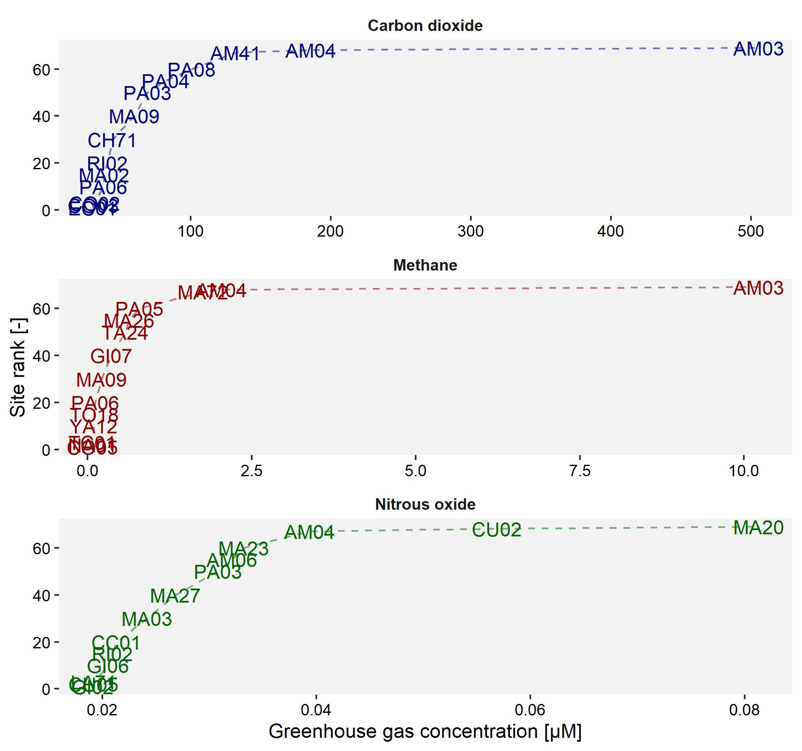

Dissolved greenhouse gases
Within the HydroCORE project, eight field monitoring campaigns were conducted to gather information on the concentrations of greenhouse gases within the water column of about 50 sites, distributed over two basins (Paute and Jubones) and two freshwater types (flowing and stagnant). At each location, a 60 mL syringe was rinsed three times with surface water prior to collecting (1) 30 mL of surface water and (2) 30 mL of air at around 1 m above the water surface. Both phases were mixed thoroughly for one minute, after which 20 mL of the headspace was transferred to a 12 mL glass vial (prerinsed three times with Helium) and send to ETH Zürich for greenhouse gas analysis.
The obtained concentrations reported by the equipment reflect the composition of the air sample after mixing in the field, hence an additional calculation is needed to translate these values into actual dissolved concentrations within the water phase. To perform these calculations, the gas-specific partition coefficients were derived based on (1) the water temperature and (2) the depth at which the sample was collected. Subsequently, the dissolved levels of the considered greenhouse gases were calculated in both µM and ppm.
Some observations related to these dissolved gases can be found below, which is an extension of the short description provided in the campaign-specific pages [link] and reports [link].
Observations
To start our exploration of the dissolved greenhouse gas data, we look at the distribution of the obtained values and how they relate to each other. More specifically, the derived density plots show us that the three considered gases display different ranges: carbon dioxide levels typically fall between 50 and 500 µM, while methane levels range from 0.05 to 5 µM and nitrous oxide levels range from 0.01 and 0.1 µM. In other words, one can expect carbon dioxide levels to be higher than methane levels, while nitrous oxide levels constitute the smallest fraction.
From the density plots, it can be observed that there might be some exceptionally high levels of dissolved greenhouse gases present in our database. A deeper look into the presence of potential outliers can provide an answer to this. In order to be able to compare the analyses for all three greenhouse gases, a site-specific factor is calculated that represents the distance of a value from the median value in terms of the inter-quartile range (IQR). More specifically, a subset is derived from the main data set for each combination of sampling site and greenhouse gas, over all campaigns (hence, resulting in a subset of maximally 8 observations). Then, the median of this subset of greenhouse gas values is subtracted from the subset of individual greenhouse gas values, followed by a division by the IQR for the same subset of greenhouse gas values. The resulting distance factor directly gives an idea of how far each individual observation is removed from the sample- and gas-specific median value. For instance, a site with a distance factor of 2 is situated at twice the IQR from the median in the positive direction.
This analysis indicates that especially methane is characterised by a couple of values that are relatively high when compared to all values obtained at the same site over all campaigns, followed by carbon dioxide and nitrous oxide. Based on the tabular overview, it can be derived that methane values of the sixth campaign were relatively high in locations TC01 and MA09, when compared to the other campaigns in the same sites. Also site MA21 displayed a relatively high methane level during campaign 3, while site MA13 showed a relatively high carbon dioxide level during campaign 4. A cutoff point at a distance factor of 5 can be considered here to help identifying (and removing) potential outliers prior to further analyses.
The abovementioned cutoff point at a distance factor of 5 results in the exclusion of some values for further analysis. More specifically, it supports the exclusion of 2 observations for carbon dioxide, 7 observations for methane, and 1 observation for nitrous oxide. Now that these more extreme values have been excluded, we can take a deeper look at the lowest and highest levels of greenhouse gases observed within each campaign. By doing so, it can be observed that the lowest levels do not vary as much as the highest levels for each of the greenhouse gases, with carbon dioxide displaying the highest variability (being highest in campaigns 5 and 6, which were characterised by an extreme drought and low water flows).
In contrast, the highest levels of greenhouse gases show a high variability and often indicate sites in the Amaluza reservoir (code 'AM') as the locations with the highest levels. When comparing these values, it is good to keep in mind that both sites AM03 and AM04 were heavily covered by water hyacinth whenever samples were collected. Aside from that, it is also interesting to note the high levels of nitrous oxide in location CU02 during campaigns 2 and 6, both of which were characterised by an extreme drought and low flow conditions within the sampled river.
Aside from the temporal variability, we are also interested in the spatial variability and how greenhouse gas levels change throughout the sampled river system. Via a subset of sampling locations, the spatial variability is displayed and shows an increase in methane and nitrous oxide downstream of the city of Cuenca during the drought campaigns (2 and 6), as well as in the upstream part of the Mazar reservoir (methane in MA01, during wet periods) and within the Amaluza reservoir (nitrous oxide in AM06, during wet periods). Carbon dioxide remains relatively stable throughout the system and the different campaigns, except for some very specific moments. Over all, it can be said that mostly methane levels increase due to the presence of the city of Cuenca, while the presence of carbon dioxide remains more or less similar. Nitrous oxide seems to be especially affected directly downstream of the city during extended periods of drought.
Lastly, all available data is compiled into a single average level of dissolved greenhouse gases per site to identify those sites that are, on average, the sites with the highest and lowest presence of dissolved greenhouse gases. From this, it is clear that site AM03 stands out from all other sites regarding carbon dioxide and methane levels, with site AM04 following at a distance. In contrast, nitrous oxide seems to be generally the highest in sites MA20 and CU02, as well as in site AM04. When we keep into account that site AM03 has only been sampled twice and that site MA20 has only been sampled once, it becomes clear that site AM04 can be considered as the location with the highest level of dissolved greenhouse gases (with the sidenote that also CU02 scores high for nitrous oxide). At the other end of the graph, the differences between sites are not as great and we get an overlap of various sites. These sites include locations in the Collay part of the reservoir (codes 'CO'), as well as other rather undisturbed sites (e.g., El Chorro (code 'EC'), El Labrado (code 'LA'), …). It should be noted that the depiction has been simplified by having only a subset of all sites, though the top and bottom three sites for each greenhouse gas are always included.
From these observations, it is clear that there is a relatively high level of variability in the dissolved levels of the three considered greenhouse gases. The exceptionally high values can be ascribed to contaminated or badly rinsed gas vials, as well as to bad luck during sampling (e.g., an accidental ebullition event that was captured either in the water or air phase), or to damage during transport. The generic approach to identify these potentially erroneous values allows for some data cleaning, though not all outliers might have been filtered out and a more in-depth approach to identify these is recommended prior to making strong statements. Yet, it also remains possible that these values correctly depict the actual situation at the time of sampling.
The remainder of the analysis shows methane and nitrous oxide are characterised by a more or less stable minimum level, while the minimum amount of dissolved carbon dioxide is more variable. The maximum level of all three greenhouse gases is frequently observed in the (vegetated) sites of the Amaluza reservoir, though often complemented with other sites that experience some kind of human impact (e.g., the Cuenca river, the Giron system). It still remains to be seen how these levels affect both the local biotic community and the local emission of greenhouse gases. More information on the latter can be found here.